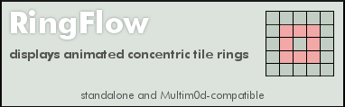

ringflow.lua |
|
|---|---|
RingflowRenders concentric-ring tile effects Standalone & Multim0d-compatible nov 3 2009 @jme  Properties section |
|
|
Metaplace Lua included script state variables via properties that could be hidden, exposed or persisted. Here there are "constant" properties as well as user-config properties. Vars deemed contstant-by-convention are indicated by ALL CAPS |
Define Properties()
inited = false
im_running = false
xa,xb,ya,yb = 1,1,1,1
sxa,sxb,sya,syb = 1,1,1,1
vecto,xtile = 1,1
|
|
declare default and/or hot-start values for any public properties. |
RINGFLOW_MIN_LOOP_MS = 50
RINGFLOW_DEFAULT_X = 1
RINGFLOW_DEFAULT_Y = 1
RINGFLOW_DEFAULT_W = 1
RINGFLOW_DEFAULT_H = 1
RINGFLOW_DEFAULT_DELAY = 0
RINGFLOW_LIVE_TILE = 1
RINGFLOW_DEAD_TILE = 4
RINGFLOW_REPS = 4
RINGFLOW_LOOP_TIME_MS = 250
RINGFLOW_DEFAULT_OPTION = 0
RINGFLOW_CLEANUP_FLAG = 0
|
|
Some silly Tool issues compelled this bit of egregiousness. |
param_count = 11
|
|
User-accessible Properties |
ringflow_x = RINGFLOW_DEFAULT_X
PersistProperty('ringflow_x')
ExposeProperty('ringflow_x', 'upper-left x value of playback area (default: ' ..RINGFLOW_DEFAULT_X ..")")
ringflow_y = RINGFLOW_DEFAULT_Y
PersistProperty('ringflow_y')
ExposeProperty('ringflow_y', 'upper-left y value of playback area (default: ' ..RINGFLOW_DEFAULT_Y ..")")
ringflow_w = RINGFLOW_DEFAULT_W
PersistProperty('ringflow_w')
ExposeProperty('ringflow_w', 'playback area width (default: ' ..RINGFLOW_DEFAULT_W ..")")
ringflow_h = RINGFLOW_DEFAULT_H
PersistProperty('ringflow_h')
ExposeProperty('ringflow_h', 'playback area height (default: ' ..RINGFLOW_DEFAULT_H ..")")
ringflow_delay = RINGFLOW_DEFAULT_DELAY
PersistProperty('ringflow_delay')
ExposeProperty('ringflow_delay', 'Startup delay. (default: ' ..RINGFLOW_DEFAULT_DELAY ..")")
ringflow_cleanup_flag = RINGFLOW_CLEANUP_FLAG
PersistProperty('ringflow_cleanup_flag')
ExposeProperty('ringflow_cleanup_flag', 'Cleanup after each run. (default: OFF)', 'checkbox')
ringflow_live_tile = RINGFLOW_LIVE_TILE
PersistProperty('ringflow_live_tile')
ExposeProperty('ringflow_live_tile', 'ID of on-tile. (default: ' ..RINGFLOW_LIVE_TILE ..")")
ringflow_dead_tile = RINGFLOW_DEAD_TILE
PersistProperty('ringflow_dead_tile')
ExposeProperty('ringflow_dead_tile', 'ID of off-tile tile. (default: ' ..RINGFLOW_DEAD_TILE ..")")
current_rep = RINGFLOW_REPS
ringflow_reps = RINGFLOW_REPS
PersistProperty('ringflow_reps')
ExposeProperty('ringflow_reps', 'Number of repetitions per run. (default: ' ..RINGFLOW_REPS ..")")
ringflow_loop_time_ms = RINGFLOW_LOOP_TIME_MS
PersistProperty('ringflow_loop_time_ms')
ExposeProperty('ringflow_loop_time_ms', 'Looping interval, in milliseconds. (caution!) (default: ' ..RINGFLOW_LOOP_TIME_MS ..")")
ringflow_option = RINGFLOW_DEFAULT_OPTION
PersistProperty('ringflow_option')
ExposeProperty('ringflow_option', 'option flow direction (0: outward, 1: inward) (default: ' ..RINGFLOW_DEFAULT_OPTION ..")")
|
|
Specify the call signature here. This is just an informative string and should indicate all parameters (in order) needed to manually call this plugin. Param onchanges are caught and reverted, SEE "parm_changed" method |
PARAMS_SIGNATURE = " X, Y, WIDTH, HEIGHT, DELAY(ms), TILE-ON, TILE-OFF, #REPS, LOOP-TIME(ms), OPTION(0..1), PER-RUN CLEANUP? (0 or 1)"
PARAMS_SIGMSG = "sig used for Multim0d manual mode calls (opt)"
ringflow_signature = PARAMS_SIGNATURE
ExposeProperty('ringflow_signature', PARAMS_SIGMSG)
|
|
Standard required tool version, name and description fields |
bt_behavior = 1
bt_name = 'ringflow'
bt_desc = 'Display concentric tile rings'
bt_help_image = '204483:9'
bt_help_image_height = 119
end
|
Methods and Handlers[ Triggers would be called by the sim serverside, given the appropriate conditions ] |
|
|
[Required Boilerplate] This is a mild bit of hackery. The Call Signature of an effect needed to be displayed on the Behavior Tool, but there was no way to write R/O text, only text that could be potentially altered by the user. As a workaround each Multim0d effect would respond to the BT onchange trigger in order to revert attempted changes to any public properties that needed to be R/O, such as the call signature. |
Trigger param_changed(owner, owner_id, script_id, prop)
local pname = self.bt_name .."_signature"
if (prop == pname) then
Debug("< SIG CHANGED > " .."script_id=" ..script_id .." owner_id=" ..owner_id)
SendTo(self, 'set_script_param', 0, owner, owner.id, script_id, prop, self.PARAMS_SIGNATURE)
Debug("reverting signature, you silly rabbit!")
end
end
|
|
[API, Optional] Cleanup to restore source tiles to whatever they were prior to the effect run. |
function ringflow_cleanup(do_cleanup,x0,y0,xm,ym,owner)
if (do_cleanup==1) then
Debug(owner.bt_name ..': Cleanup called!')
for p=x0,xm do
for q=y0,ym do
SetTileAt(p,q,owner.ringflow_dead_tile)
end
end
end
end
|
|
Calculate starting points for inner ring Handle trivial, odd and even cases. |
function getInnerStartingPoints(km)
local ka,kb = 1,1
if (math.mod(km,2)) ~=0 then
if (km ~= 1) then
ka = math.floor(km/2)
kb = ka + 2
end
else
if (km ~= 2) then
ka = math.floor(km/2)
kb = ka + 1
end
end
ka = ka -1
kb = kb -1
return ka,kb
end
|
|
Paint rings moving inward Tick coords, reset to outer ring when core is reached. |
function ringflow_in(owner,x0,y0,xr,yr)
owner.xa = owner.xa + owner.vecto
owner.xb = owner.xb - owner.vecto
owner.ya = owner.ya + owner.vecto
owner.yb = owner.yb - owner.vecto
if ((owner.xb-owner.xa)<1) or ((owner.yb-owner.ya)<1) then
owner.xa = x0
owner.ya = y0
owner.xb = x0 + xr -1
owner.yb = y0 + yr -1
owner.current_rep = owner.current_rep -1
if (owner.xtile == owner.ringflow_live_tile) then
owner.xtile = owner.ringflow_dead_tile
else
owner.xtile = owner.ringflow_live_tile
end
end
end
|
|
Paint rings moving outward Tick coords, reset to inner core when outer ring is reached. |
function ringflow_out(owner, x0, y0, xr, yr)
owner.xa = owner.xa - owner.vecto
owner.xb = owner.xb + owner.vecto
owner.ya = owner.ya - owner.vecto
owner.yb = owner.yb + owner.vecto
if (owner.xa |
|
Process a frame iteration
And finally handle stop commands in a similar manner top completions |
Trigger ringflow(x0,y0,xr,yr)
local qtile = 1
qtile = self.xtile
for i=self.xa,self.xb do
SetTileAt(i,self.ya,qtile)
end
for i=self.ya,self.yb do
SetTileAt(self.xb,i,qtile)
end
for i=self.xa,self.xb do
SetTileAt(i,self.yb,qtile)
end
for i=self.ya,self.yb do
SetTileAt(self.xa,i,qtile)
end
if (self.ringflow_option == 0) then
ringflow_out(self, x0, y0, xr, yr)
else
ringflow_in(self, x0, y0, xr, yr)
end
if (self.im_running == true) then
if (self.current_rep > 0) then
SendTo(self,self.bt_name,self.ringflow_loop_time_ms,x0,y0,xr,yr)
else
self.im_running = false
self.current_rep = self.ringflow_reps
Debug(self.bt_name .." finished")
ringflow_cleanup(self.ringflow_cleanup_flag,x0,y0,(x0+xr-1),(y0+yr-1),self)
SendTo(self,'multimod_cmd_done',10)
end
else
ringflow_cleanup(self.ringflow_cleanup_flag,x0,y0,(x0+xr-1),(y0+yr-1),self)
self.im_running = false
SendTo(self,'multimod_cmd_done',10)
Debug(self.bt_name .." halted")
end
end
|
|
Init any one-time init items go here. Not much interesting in this one... |
function ringflow_init(owner)
owner.inited = true
end
|
|
|
|
Validate [API, Optional] Parameter validations. Validations will probably be custom for each effect, |
function ringflow_validate_params(owner,p)
p[1] = math.abs(p[1])
p[2] = math.abs(p[2])
p[3] = math.abs(p[3])
p[4] = math.abs(p[4])
p[5] = math.abs(p[5])
p[6] = math.abs(p[6])
p[7] = math.abs(p[7])
p[8] = math.abs(p[8])
if (tonumber(p[9]) < owner.RINGFLOW_MIN_LOOP_MS) then
p[9] = owner.RINGFLOW_MIN_LOOP_MS
end
end
|
|
Shutdown [API, REQUIRED] Vary the internals as desired, just be sure to invoke a crisp shutdown! |
Trigger mod_shutdown()
if (self.im_running == true) then
Debug(self.bt_name .." mod_shutdown recieved")
end
self.im_running = false
end
|
|
Standalone Shutdown [API, Optional, only needed if your module has a standalone mode] |
Trigger ringflow_shutdown()
self.im_running = false
SendTo(self,'multimod_cmd_done',0)
Debug(self.bt_name .." shutdown called!")
end
|
|
Trigger for standalone usage |
|
|
[API, Optional, only needed if your module has a standalone mode]
|
Trigger use(user)
if (self.multimod_present == nil) then
Debug("- Standalone mode -")
if (self.im_running == false) then
self.im_running = true
ringflow_validate_params(self)
self.sxa,self.sxb = getInnerStartingPoints(self.ringflow_w)
self.sya,self.syb = getInnerStartingPoints(self.ringflow_h)
self.xtile = self.ringflow_live_tile
self.current_rep = self.ringflow_reps
if (self.ringflow_option ==0) then
self.xa = self.ringflow_x + self.sxa
self.xb = self.ringflow_x + self.sxb
self.ya = self.ringflow_y + self.sya
self.yb = self.ringflow_y + self.syb
self.vecto = 1
elseif (self.ringflow_option ==1) then
self.xa = self.ringflow_x
self.xb = self.ringflow_x + self.ringflow_w -1
self.ya = self.ringflow_y
self.yb = self.ringflow_y + self.ringflow_h -1
self.vecto = 1
end
Debug(self.bt_name ..' - running -')
SendTo(self,self.bt_name,self.ringflow_delay,self.ringflow_x,self.ringflow_y,self.ringflow_w,self.ringflow_h)
else
Debug("MANUAL HALT!")
SendTo(self,self.bt_name ..'_shutdown',0)
self.im_running = false
end
else
end
end
|
|
Main entry point [API, Required] : This is called by the Player and is passed a Player-opaque, possibly empty table of support params. This call starts the plugin running and should behave idempotently.
And finally, select for effect option and call with appropriate handler reference. |
Trigger ringflow_startup(xparams)
if (self.im_running == false) then
self.im_running = true
if (self.inited == false) then
ringflow_init(self)
end
if (#xparams ~= 0) then
if (#xparams == self.param_count) then
ringflow_validate_params(self,xparams)
self.ringflow_x = xparams[1]
self.ringflow_y = xparams[2]
self.ringflow_w = xparams[3]
self.ringflow_h = xparams[4]
self.ringflow_delay = xparams[5]
self.ringflow_live_tile = xparams[6]
self.ringflow_dead_tile = xparams[7]
self.ringflow_reps = xparams[8]
self.ringflow_loop_time_ms = xparams[9]
self.ringflow_option = xparams[10]
self.ringflow_cleanup_flag = xparams[11]
else
Debug(self.id ..": " ..self.bt_name .." ERROR: Manual mode: incorrect number of playlist params")
Debug('required: ' ..self.param_count .."params, got " ..#xparams )
end
end
self.sxa,self.sxb = getInnerStartingPoints(self.ringflow_w)
self.sya,self.syb = getInnerStartingPoints(self.ringflow_h)
self.xtile = self.ringflow_live_tile
self.current_rep = self.ringflow_reps
if (self.ringflow_option ==0) then
self.xa = self.ringflow_x + self.sxa
self.xb = self.ringflow_x + self.sxb
self.ya = self.ringflow_y + self.sya
self.yb = self.ringflow_y + self.syb
self.vecto = 1
elseif (self.ringflow_option ==1) then
self.xa = self.ringflow_x
self.xb = self.ringflow_x + self.ringflow_w -1
self.ya = self.ringflow_y
self.yb = self.ringflow_y + self.ringflow_h -1
self.vecto = 1
end
Debug(self.bt_name ..' - running -')
SendTo(self,self.bt_name,self.ringflow_delay,self.ringflow_x,self.ringflow_y,self.ringflow_w,self.ringflow_h)
else
Debug(self.bt_name ..' sez: not yet...')
self.im_running = false
end
end
|